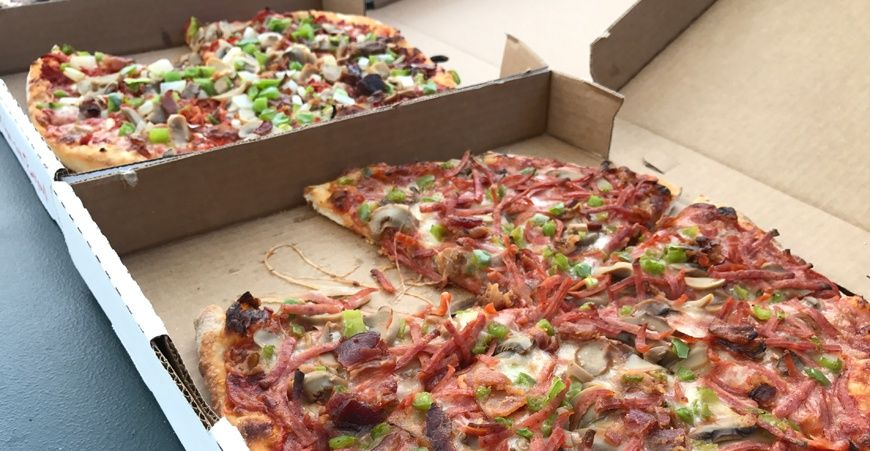

Madonna, residents on Vancouver Island, and soldiers in Vietnam share an unexpected connection: their request for Windsor-style pizza. Windsor has a rich business history, shaped by its proximity to Detroit and its relationship to the North American auto industry. However, pizza-makers in Windsor have created a unique, internationally recognized industry that thrives on local, family-run restaurants. Windsor pizza, is known for its shredded pepperoni, canned mushrooms, Galati cheese, and crust dusted with cornmeal. Windsor Pizza companies have asserted a uniquely Canadian identity that counters American influence.
Learn More About